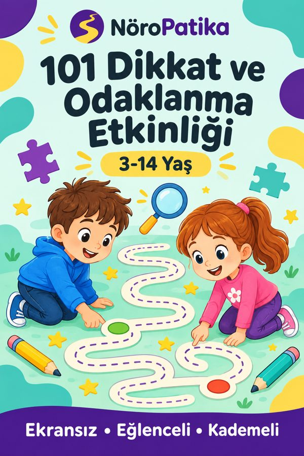

Ana ürün
NöroPatika · 101 Dikkat ve Odaklanma Etkinliği
3-14 yaş, kolaydan zora 101 yazdırılabilir etkinlik ve cevap anahtarı.
Aç →Bonus rehberlerin
Bonus 1
7 Günde Odak Meydan Okuması
Her gün tek bir kısa görev ve takip tablosu: dikkat, istikrar ve başladığını bitirme güveni.
Aç →Bonus 2NöroRutin Görsel Panosu
Günlük pano, 24 kesilebilir rutin kartı ve haftalık yıldız tablosu.
Aç →Bonus 3Oyunda Duygu Kartları
24 duygu kartı ve kartlarla oynanacak 3 oyun.
Aç →Bonus 4Mola ve Sakinleşme Kartları
16 kart: nefes egzersizleri, kısa molalar ve basit komutlar.
Aç →Bonus 5Anne Babalar ve Öğretmenler İçin Rehber
Uygulama, yaşa göre uyarlama, hayal kırıklığını önleme ve gelişimi takip için öneriler.
Aç →Nereden başlamalı
- Kitabı aç ve «Bu kitabı nasıl kullanırsın?» sayfasını oku.
- Çocuğunun yaşına uygun seviyeden 1-2 sayfa yazdır.
- Günde 10-15 dakika, masada birlikte: bitince yıldızları boyayın.
- İlk hafta için Bonus 1'deki 7 günlük meydan okumayla başlayabilirsin.
Yalnızca kişisel kullanım içindir. Dosyaların yeniden satışı ve paylaşımı yasaktır.